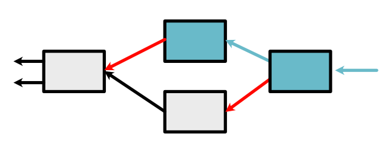

Module 1 - Auto-Differentiation¶
This module shows how to build the first version of MiniTorch (mini-MiniTorch?) using only Scalar values. This covers key aspects of auto-differentiation: the key technique in the system. Then you will use your code to train a preliminary model.
All starter code is available in https://github.com/minitorch/Module-1 .
To begin, remember to activate your virtual environment first, and then clone your assignment:
>>> git clone {{STUDENT_ASSIGNMENT1_URL}}
>>> cd {{STUDENT_ASSIGNMENT_NAME}}
>>> pip install -Ue .
Module 1 is built upon the previous Module 0, so make sure to pull your files from Assignment 0 to your new repo.
Please continue to follow the Contributing guideline.
Tasks¶
Task 1.1: Numerical Derivatives¶
Note
This task requires basic familiarity with derivatives. Be sure to review differentiation rules and the notation for derivatives. Then carefully read the Guide on Derivatives.
Todo
Complete the following function in minitorch/scalar.py and pass tests marked as task1_1.
-
minitorch.scalar.central_difference(f, *vals, arg=0, epsilon=1e-06)¶ Computes an approximation to the derivative of f with respect to one arg.
See Derivatives or https://en.wikipedia.org/wiki/Finite_difference for more details.
- Parameters
f -- arbitrary function from n-scalar args to one value
*vals (list of floats) -- n-float values \(x_0 \ldots x_{n-1}\)
arg (int) -- the number \(i\) of the arg to compute the derivative
epsilon (float) -- a small constant
- Returns
An approximation of \(f'_i(x_0, \ldots, x_{n-1})\)
- Return type
float
Task 1.2: Scalars¶
Note
This task requires familiarity with the minitorch.Scalar class.
Be sure to first carefully read the Guide on
Tracking Variables and to refresh your memory on Python numerical overrides.
Implement the overridden mathematical functions required for the
minitorch.Scalar class.
Each of these requires wiring the internal Python operator to the correct
minitorch.Function.forward() call.
-
minitorch.scalar.ScalarFunction.forward(ctx, *inputs)¶ Forward call, compute \(f(x_0 \ldots x_{n-1})\).
- Parameters
ctx (
Context) -- A container object to save any information that may be needed for the call to backward.*inputs (list of floats) -- n-float values \(x_0 \ldots x_{n-1}\).
Should return float the computation of the function \(f\).
Read the example ScalarFunctions that we have implemented for guidelines. You may find it useful to reuse the operators from Module 0.
We have built a debugging tool for you to observe the workings of your expressions to see how the graph is built. You can run it in project/show_expression.py. You need to install pydot and networkx. You can alter the expression at the top of the file and then run the code to create a graph in Visdom:
def expression():
x = minitorch.Scalar(10, name="x")
y = x + 10.
y.name = "y"
return y
>>> python project/show_expression.py
Todo
Complete the following functions in minitorch/scalar.py.
-
minitorch.scalar.Mul.forward(ctx, a, b)¶
-
minitorch.scalar.Inv.forward(ctx, a)¶
-
minitorch.scalar.Neg.forward(ctx, a)¶
-
minitorch.scalar.Sigmoid.forward(ctx, a)¶
-
minitorch.scalar.ReLU.forward(ctx, a)¶
-
minitorch.scalar.Exp.forward(ctx, a)¶
Todo
Complete the following function in minitorch/scalar.py, and pass
tests marked as task1_2.
See Python numerical overrides
for the interface of these methods. All of these functions should return
minitorch.Scalar arguments.
-
minitorch.Scalar.__lt__(self, b)¶
-
minitorch.Scalar.__gt__(self, b)¶
-
minitorch.Scalar.__sub__(self, b)¶
-
minitorch.Scalar.__neg__(self)¶
-
minitorch.Scalar.__add__(self, b)¶
-
minitorch.Scalar.log(self)¶
-
minitorch.Scalar.exp(self)¶
-
minitorch.Scalar.sigmoid(self)¶
-
minitorch.Scalar.relu(self)¶
Task 1.3: Chain Rule¶
Note
This task is quite tricky, so be sure you understand the chain rule, Variables, and Functions. Be sure to first read the Guide on Autodifferentiation very carefully and read the code for other ScalarFunctions.
Implement the chain_rule function on FunctionBase for functions of arbitrary arguments. This function should be able to backward process a function by passing it in a context and \(d_{out}\) and then collecting the local derivatives. It should then pair these with the right variables and return them. This function is also where we filter out constants that were used on the forward pass, but do not need derivatives.
Todo
Complete the following function in minitorch/autodiff.py, and pass tests marked as task1_3.
-
minitorch.FunctionBase.chain_rule(ctx, inputs, d_output)¶ Implement the derivative chain-rule.
- Parameters
ctx (
Context) -- The context from running forwardinputs (list of args) -- The args that were passed to
FunctionBase.apply()(e.g. \(x, y\))d_output (number) -- The d_output value in the chain rule.
- Returns
list of (Variable, number) A list of non-constant variables with their derivatives (see is_constant to remove unneeded variables)
Task 1.4: Backpropagation¶
Note
Be sure to first read the Guide on Backpropagation very carefully and read the code for other ScalarFunctions.
Implement backpropagation. Each of these requires wiring the internal Python
operator to the correct
minitorch.Function.backward() call.
-
minitorch.scalar.ScalarFunction.backward(ctx, d_out)¶ Backward call, computes \(f'_{x_i}(x_0 \ldots x_{n-1}) \times d_{out}\).
- Parameters
ctx (Context) -- A container object holding any information saved during in the corresponding forward call.
d_out (float) -- \(d_out\) term in the chain rule.
Should return the computation of the derivative function \(f'_{x_i}\) for each input \(x_i\) times d_out.
Read the example ScalarFunctions that we have implemented for guidelines. Feel free to also consult differentiation rules if you forget how these identities work.
Todo
Complete the following functions in minitorch/autodiff.py and minitorch/scalar.py, and pass tests marked as task1_4.
-
minitorch.backpropagate(variable, deriv)¶ Runs a breadth-first search on the computation graph in order to backpropagate derivatives to the leaves.
See Backpropagation for details on the algorithm.
- Parameters
variable (
Variable) -- The final variablederiv (number) -- Its derivative that we want to propagate backward to the leaves.
No return. Should write to its results to the derivative values of each leaf.
-
minitorch.scalar.Mul.backward(ctx, d_output)¶
-
minitorch.scalar.Inv.backward(ctx, d_output)¶
-
minitorch.scalar.Neg.backward(ctx, d_output)¶
-
minitorch.scalar.Sigmoid.backward(ctx, d_output)¶
-
minitorch.scalar.ReLU.backward(ctx, d_output)¶
-
minitorch.scalar.Exp.backward(ctx, d_output)¶
Task 1.5: Training¶
If your code works, you should now be able to run the training script. Study the code in project/run_scalar.py carefully to understand what the neural network is doing. You will also need your Module code from the previous assignment as well. You can modify the dataset and the module with the parameters at the top of the file. Start with this simple config:
PTS = 50
DATASET = datasets.Simple(PTS, vis=True)
HIDDEN = 2
RATE = 0.5
You can then move up to something more complex, for instance:
PTS = 50
DATASET = datasets.Xor(PTS, vis=True)
HIDDEN = 10
RATE = 0.5
If your code is successful, you should be able to fit the data like this:

Todo
Train a scalar model, and add the output training logs and final images like the ones above to your README file.